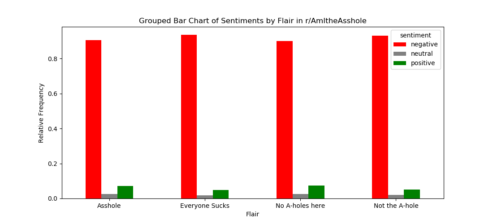
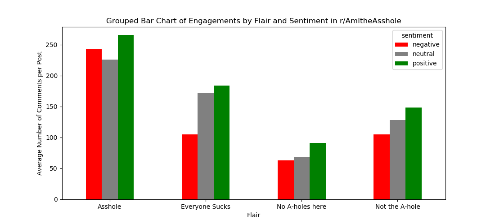
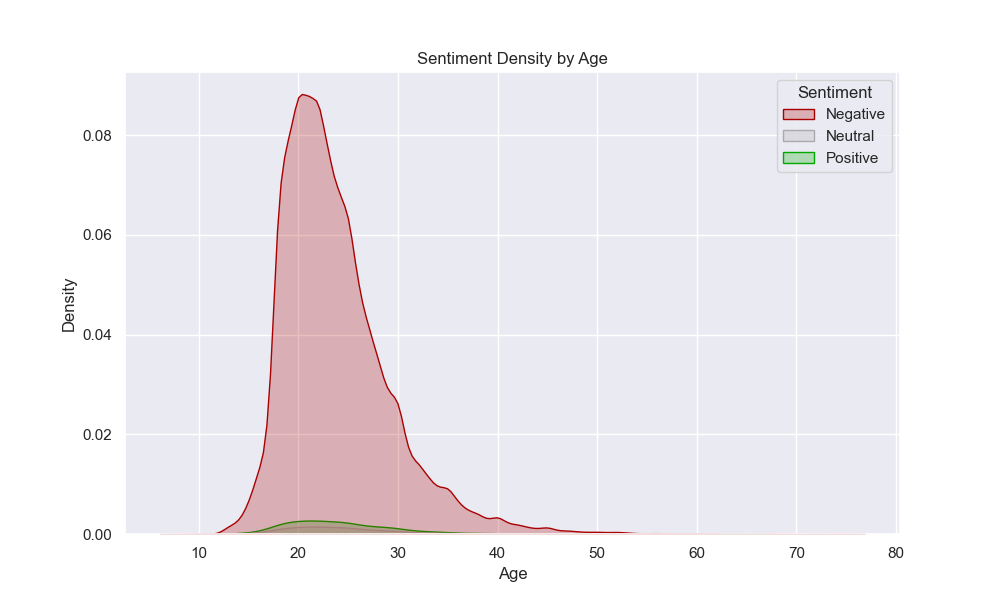
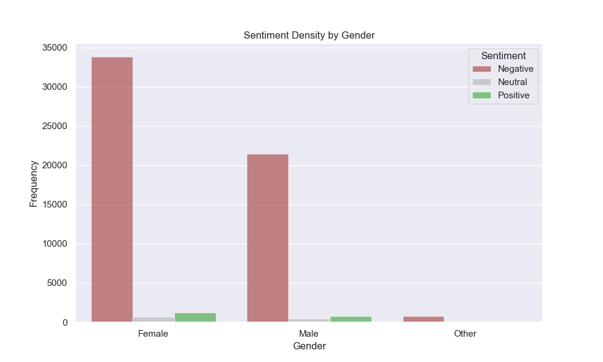
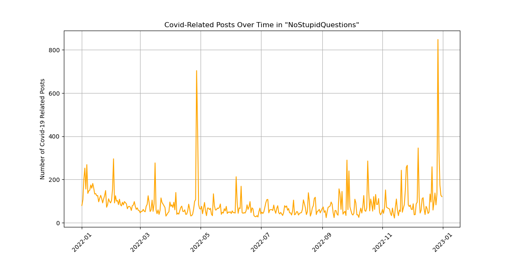
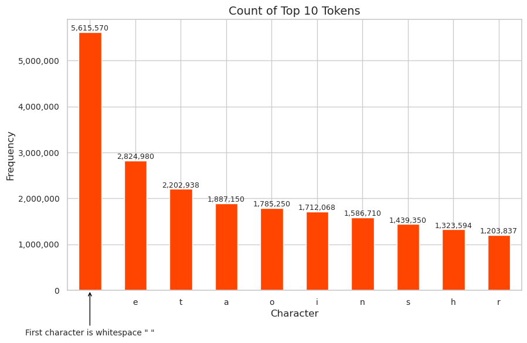

NLP
Executive summary
Flair Sentiment Model
In this section we explored the textual content of the posts of r/AmItheAsshole (r/AITA) with respect to their assigned flairs and subsequently applying a pretrained sentiment model. Using a sparkNLP pipeline, all text posts from r/AITA in 2022 with one of the four primary flairs (Asshole, Not the A-hole, Everybody Sucks, No A-holes Here) attached were processed/cleaned and run through a pretrained sentiment model. The sentiment model most commonly assigned these posts a “negative” sentiment, as shown in Figure 1. This holds true across posts assigned any of the four primary flairs.

To further delve into the sentiments of these posts in r/AITA, we analyzed these sentiment assignments with respect to the engagement a post receives, represented by the number of comments under each posts. In the Figure 2, the mean number of comments per post grouped by flair assignment and sentiment assignment.

From this plot above, we can extract several conclusions. We can see that posts assigned the “Asshole” flair receive the most user engagement (on average) and posts assigned “No A-holes here” receive the least engagement, on average. Additionally, it is apparent that posts assigned a “negative” sentiment receive less user engagement than those with a “positive” sentiment across all four primary flairs. Thus, it is possible there could be a relationship wherein the more “positive” a post’s sentiment/writing is, the more likely it is to receive more engagement (at least in the form of number of comments).
| Flair | Negative | Neutral | Positive |
|---|---|---|---|
| Asshole | 242.2 | 225.59 | 265.44 |
| Everyone Sucks | 104.88 | 172.31 | 183.61 |
| No A-holes here | 63.15 | 67.74 | 90.92 |
| Not the A-hole | 105.07 | 128.07 | 148.4 |
Preparing Reddit data for multi-class classification
See in Figure 3.

See in Figure 4.

See in Table 2.
| Female | Male | Other |
|---|---|---|
| 0.95 | 0.95 | 0.93 |
| 0.02 | 0.02 | 0.02 |
| 0.03 | 0.03 | 0.05 |
Preparing Covid-19 data in NoStupidQuestions
See in Figure 5.

Preparing Reddit and External Data for Training an RNN
For this exercise, we focused on preparing text that contains great storytelling to train a Recurrent Neural Network (RNN) that can generate new stories. We use our 12 months of Reddit submissions data described in the EDA section for the analysis. Additionally, we integrate external data containing the text of famous stories from Project Gutenberg books that have stood the test of time, specifically The Scarlet Letter by Nathaniel Hawthorne, The Odyssey by Homer, Crime and Punishment by Fyodor Dostoyevsky, Metamorphosis by Franz Kafka, and The Great Gatsby by F. Scott Fitzgerald.
To prepare the Reddit data, we extracted only the relevant information from the parquets, such as subreddit, title, selftext, score, and URL, and filtered out deleted or empty submissions. To select the best stories, we used a regular expressions pattern to remove any “Edit:” sections to remove post-edit additions that could skew the analysis. Since stories must be at least a few paragraphs, we removed all posts that didn’t have at least 4500 characters (around 750 words). Then, we filtered for only stored with score in the top 85th percentile, thereby focusing on submissions that garnered significant user interaction.
We then combined the text sources. The data underwent a series of NLP transformations, including custom tokenization and lowercasing, to prepare it for advanced analysis. We constructed a vocabulary and transformed the individual characters into tokens. The resulting frequency of each token is shown in Figure 6. Lastly, we stored the processed data in a structured Parquet format alongside the character-to-index mappings, crucial for the subsequent machine-learning modeling.

As an additionally way to visualize the resulting dataset, we also can see the results of the top 10 N-Grams, where \(N=5\) in Table 3.
| 5-Gram (incl spaces) | Count |
|---|---|
| i was | 22,165 |
| and i | 17,933 |
| in the | 15,264 |
| of the | 13,807 |
| that i | 11,631 |
| to be | 10,346 |
| it was | 10,172 |
| to the | 9,418 |
| i had | 8,307 |
| i dont | 8,212 |